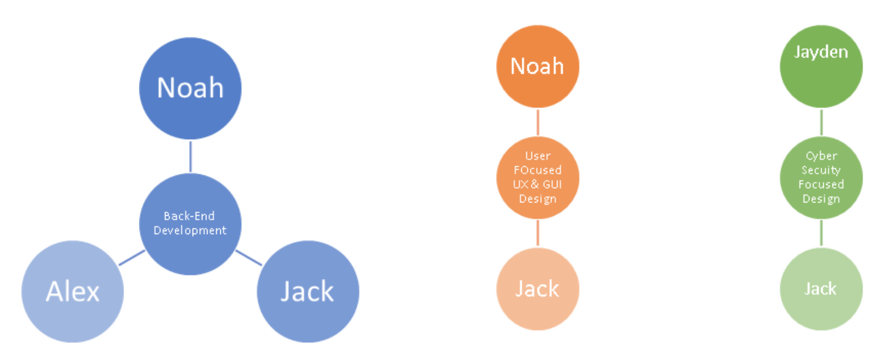
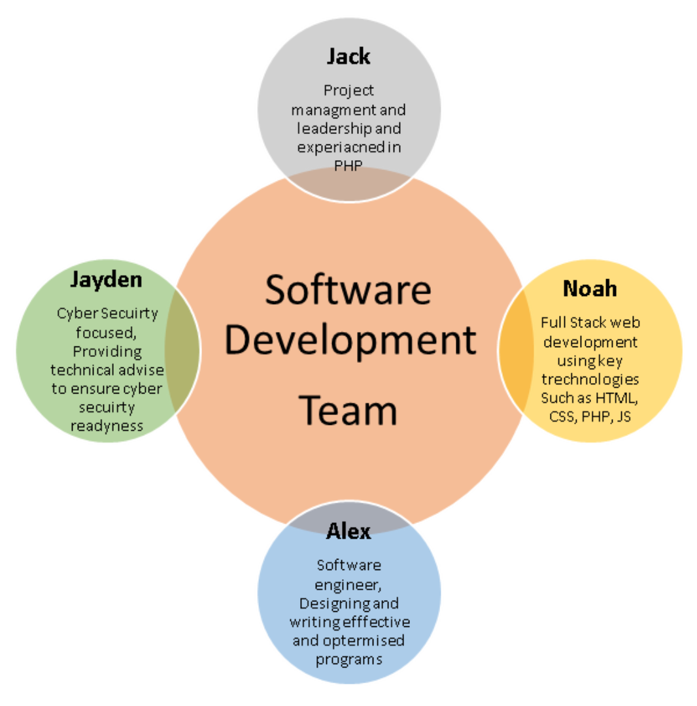

Ideal Jobs
Assignment Credit: Jack Harris
Overview
From the ideal jobs we can see that our team has a wide verity of key interest areas with complimentary skills that create a fantastic and extremely effective team. From key leadership and project management skills to software engineering and cyber security, our variation of ideal jobs would make a fantastic development team. Below in this comparison and analyses page we will lay out the exact jobs and skills sets of the team and explain how these different jobs function together to create a seamless and smooth development team.
Team Members and Comparisons

Jack job and strengths focuses on leadership, project and time management whilst ensuring he has a fantastic and extensive understanding of PHP to enable him to effectively lead a team of developers. As a Lead developer Jack will work with the team to developer software and updates on schedule and to company requirements.
Back-end Development and Programming
User Focused UX & GUI Design
Cyber Security Focused Design & Development

Noahs ideal job is a full stack web developer, this encompasses all the front-end languages required (HTML, CSS, JS) as well as a extensive understanding of backend systems like PHP and Server Side JS. Noahs role compliments and expands on Jacks and will allow him to develop and consider all aspects of the development cycle coving both front and back end development.
Back-end Development and Programming
User Focused UX & GUI Design

Alex wants to move into a software engineer role, this means he will be specialized at writing optimised and efficient code for a business or organisations requirements. The software engineer role does not specify any languages, but we can assume that being so skilled his knowledge would encompass several languages such as (Java, C++, PHP). Alexs role really compliments Noah and Jack and having a dedicated software engineer to support the development team will allow for a better quality of programming to be written.
Back-end Development and Programming

Jayden’s job whilst different to the above-mentioned roles does provided a fantastic service to the team, Jayden’s ideal job is one of a Cyber Security expert, this will allow him to provide core and key advise and requirements on developing software with a key focused on cyber security and user privacy. Jayden really plays a key role in providing a wealth of cyber security knowledge to the team allow for them to have a focus on security from day one.
Cyber Security Focused Design & Development
Comparison Table
| Ideal Job | Key Skills | Overlapping Skills | |
|---|---|---|---|
| Jack | Lead PHP Developer |
|
|
| Noah | Junior Web Developer (Full Stack) |
|
|
| Jayden | Cyber Security Technician |
|
|
| Alex | Software Engineer |
|
|
Visual Graphs - Team Members
These graphs show the common elements that each team member will be skilled in, We can see that for Back-End Development we have the largest overlap between Jack, Noah and Alex, whilst Cyber Security and UX Design have a small overlapping core as they are more specialised.

Visual Graphs - Development Team Overview
Here we can see a large graph depicting the role of each team member with the development team at the center, this graph is key as it shows how each area overlaps and forms park of the "whole" Development Team
